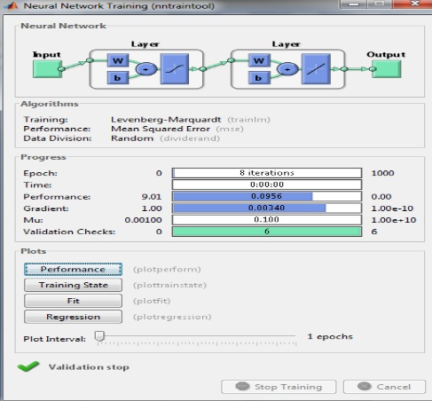

Academic, Research, and Independent Projects
Deep Learning
Overview: We have developed algorithms for neural architecture to register CT scan images.
 |
Medical Image Registration and Fusion Processing SystemResearch Project, Professor Dr. Weiying Dai’s Lab, Binghamton University, NYFebruary 2018–December 2018• Developed a Deep Learning tool (Python) for registering Computerized Tomography scan of the kidney• Built a Registration Framework based on a three-dimensional Convolutional Neural Network that directly learns transformations between pairs of three-dimensional imagesPresentation |
Machine Learning
Overview: Devloped neural network algorithms for recomendation system, public transportation system, and crop disease detection system.
Recommender SystemAcademic Project, Binghamton University, NYJanuary 2018-May 2018• Developed a recommender system (Java) using the collaborative filtering approach• Used item-based Collaborative filtering and Adjusted cosine similarity to compute the item similarity• Predicted the missing values for a user by the Weighted sum approachCode |
|  |
Intelligent Interpretation System for Diseases on Cash Crops in Vidarbha RegionAcademic Project, Sant Gadge Baba Amravati University, Amravati, IndiaAugust 2013-May 2014• Developed a MATLAB application for the detection of 5 common crop plant diseases in India with 91% classification accuracy• Implemented K-means clustering technique and Multilayer Perceptron Neural Network for clustering and classification of plant diseasesResearch Paper 1 | Research Paper 2 |

|
Intelligent Public Transport Prediction System using Wireless Sensor NetworkResearch Project, Sant Gadge Baba Amravati University, Amravati, IndiaAugust 2013-January 2014• Forecasting of vehicle travel time prediction for Jaipur-Delhi Route using FTLR Neural Network Model with Gamma Memory• Public Transport vehicle failure reporting systemResearch Paper 1 | Research Paper 2 | Research Paper 3 |
Mobile Application
Overview: Developed Android Application using sensors.
GPS Coordinates Emergency Alert ApplicationAcademic Project, Binghamton University, NYAugust 2018- December 2018• Developed an Android application with functionality to send a Location Alert message while saving critical time during an emergency• Used Accelerometer sensor and Kalman Filter Algorithm to recognize Shake Gesture and Google Fused Location Provider APIVideo | Application |
Computer Network
Overview: Developed algorithms, protocols, and network systems.
 |
Control Model of Adaptive Headlight SystemIndependent Work, IETE Cynosure (ICCEEE-2013), Lonere, IndiaAugust 2012-December 2013• Developed an Adaptive Headlight Microcontroller based system (C++) using the CAN bus protocol• Designed the system to adjust the automobile's headlights to curves in the road based on steering rotation and vehicle yaw rotation• Awarded the Institution of Electronics and Telecommunications Engineers (IETE) Mumbai Centre’s Young Researchers Award (selected from 110 national and international researchers)Research Paper | Award |
Q-CSMA: Queue-Length based CSMA/CA AlgorithmIndependent WorkAugust 2013-May 2014• Proposed a discrete-time version of the CSMA algorithm (Java), where multiple links are allowed to update their states in a single time slot• Decreased Delays by 11% (average) while retaining the throughput-optimality property in Wireless NetworksCode |
Tech for Social Good
Overview: Implemented design principles, to leverage engineering technology for social welfare.
Improving Cattle Fodder Storage, TanzaniaInternational Development Design Summit 2014, MIT D-Lab, USA● Implemented Human-Centered Design approach to build low-cost Hand Hay Baler and Storage Unit to improve Maasai cattle breeding and caring practices● Developed a GUI application (in Java) to teach Maasai basic computer skills and EnglishArticle |
Gas SwitchResearch Project, Massachusetts Institute of Technology (MIT) Media Lab, Cambridge, MAJanuary-February 2014● Designed a Smart Gas Stove with Burner Dial settings and Timer Smartphone functionality using Raspberry Pi to control Servo Motor by Android Smartphone over Wi-Fi●Achieved a 30% increase in cooking time efficiency and a 20% decrease in monthly expenditure for Dharavi Catering BusinessesVideo |